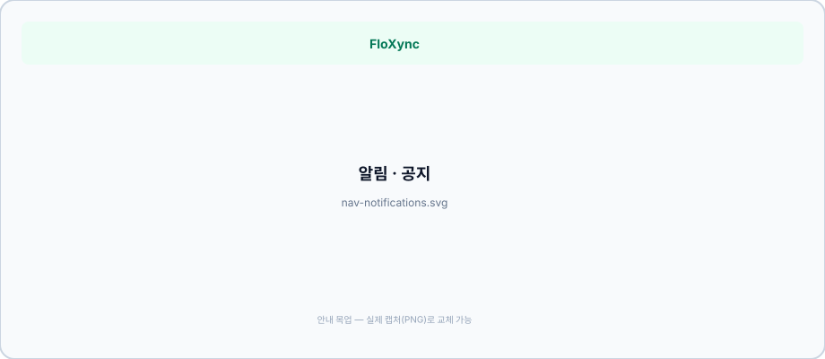
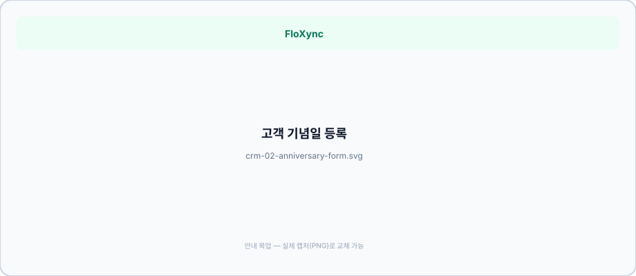
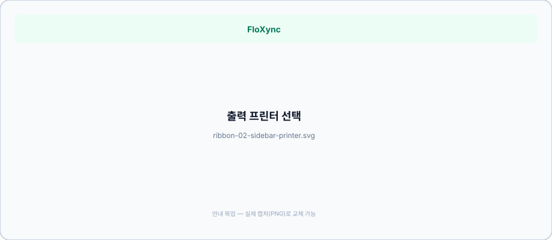

4
환경 설정 이후: 왼쪽 메뉴 한 줄 한 줄
아래 순서는 실제 앱의 왼쪽 사이드바(시작 → 매장 운영 → 제작 · 출력 → 마케팅 → 매장 설정 · 구독 )와 맞춰 두었습니다.
PRO ·ERP 통합 플랜을 기준으로 설명하며, 리본 전용 등 다른 플랜에서는 일부 메뉴가 보이지 않을 수 있습니다.
4-0. 메뉴 지도 (한눈에)
시작 : /dashboard 업무 홈 — 오늘 주문·매출·일정 요약과 매출 차트. 알림·공지 · 본사 게시판 (조직 소속 시).매장 운영 : 주문 접수·목록, 외부발주·지점 이관·회원사 수발주 (각 이관 내역 ·수발주 내역 화면), 일일 마감, 배송·픽업 , 매장 일정 , 모바일 픽업 , 고객 CRM, 상품·재고, 거래처·매입, 정산·통계, 지출(AI 영수증 ), 세무. (다매장 본사는 이관 정산 )제작 · 출력 : 리본 프린터, 카드 디자인 스튜디오.마케팅 : 매출 캘린더 (기념일·구매 후·SNS) · AI 홍보 마스터 (레거시) 매장 설정 · 구독 : POS 연동 (준비중) , 환경 설정(이미 1장에서 다룸), 구독·플랜.화면 하단의 빠른 이동 바 (모바일 등)에서는 홈·새 주문·주문현황·리본·배송/픽업·정산·지출·재고로 바로 갈 수 있습니다.
업무 홈
경로: /dashboard · M01 · 검수 2026-07-04
개요 로그인 후 첫 화면. 오늘 주문·매출·픽업/배송 일정 카드와 매출 차트(일/주/월/년)를 제공합니다.
카드 · 버튼
표기 하는 일
동기화 상태 배지 오프라인·동기화 중 표시 오늘 주문 / 오늘 매출 당일 핵심 KPI 오늘·내일 픽업/배송 일정 요약 상세 일정 확인 매장 일정 · 배송·픽업 매출 차트 기간 탭 일 · 주 · 월 · 년 전환
인사 · 동기화
{매장}님! 오늘 현황 인사말 실시간 동기화 활성 동기화 배지
매출 차트
매출 지표 추이 차트 제목 일간 / 주간 / 월간 / 연간 기간 탭
최근 주문 · 빠른 작업
최근 주문 내역 · 전체보기 주문 목록 주문등록 · 주문목록 · 배송관리 · 재고관리 빠른 작업 카드 재고 알림 · 재고 관리 바로가기 재고
막힘 해소 매출 숫자가 기대와 다르면 환경 설정의 매출 집계 기준 (주문일 vs 결제완료일)을 먼저 확인하세요.
매장 일정
경로: /dashboard/schedule · ERP 플랜 · v4.6 · 검수 2026-07-04
개요 픽업·배송·고정비·지출·직원 근무·특이사항을 한 달 캘린더 에서 겹쳐 봅니다. 체크한 종류만 표시되며, 날짜를 누르면 그날 상세 패널이 열립니다.
레이어 필터 · 상단
구역 표기 하는 일
필터 픽업 / 배송 / 고정비 / 지출 / 직원 스케줄 / 특이·전달사항 종류별 표시·숨김 토글 필터 🔒 고정비 PIN 해제 후 고정비 레이어 표시 툴바 + 특이/전달사항 메모 추가 다이얼로그 툴바 + 직원 스케줄 근무 추가 다이얼로그
월 캘린더
yyyy년 M월 · 오늘 · ◀ / ▶ 월 이동 날짜 셀 클릭 해당일 ScheduleDayView 패널 날짜 칩 (건수 배지) 픽업·배송·고정비·지출·직원·메모 요약
일별 패널 · 다이얼로그
+ 특이/전달사항 · + 직원 스케줄 선택일 기준 추가 ✏️ / 🗑️ (직원·메모) 수정·삭제 상세 보기 주문·지출 상세 페이지 이동 직원 스케줄 DLG: 이름·날짜·시작·종료·메모 · 취소/저장 근무 등록 특이사항 DLG: 날짜·내용 · 취소/저장 전달사항 고정비 PIN DLG 암호 확인 → 고정비 레이어 잠금 해제
배송·픽업 주문 일정: 배송·픽업 · 업무 홈 카드: 업무 홈
알림 · 공지 · 알림함
경로: /dashboard/notifications · 상단 종 아이콘 · M14 · v4.4

구역 표기 하는 일
헤더 알림함 FloXync·본사 공지 통합 목록 미확인 알림 N건 읽지 않은 개수 목록 플랫폼 / 본사 배지 FloXync 업데이트 vs 조직 공지 목록 항목 클릭 읽음 처리 + 본문 표시 본문 중요 배지 priority=high 본문 본사 게시판에서 댓글 보기 HQ 공지만 · org-board 링크
막힘 해소 알림이 안 보이면 로그인한 매장 계정이 맞는지 확인하세요.
본사 게시판
경로: /dashboard/org-board · 조직 소속 지점 · v4.6 · 검수 2026-07-04
개요 같은 본사 조직 의 공지·안내를 모아 봅니다. 본사 관리자가 올린 글은 지점에서 읽고 내용 확인(본사에 전달) 로 읽음을 남깁니다. 알림함에서도 본사 공지로 들어올 수 있습니다.
구역 표기 하는 일
헤더 본사 게시판 제목 헤더 (본사 관리자) 새 게시물 작성 다이얼로그 카드 일반 / 중요 강조 배지 카드 조직명 · 등록일 · 만료일 메타 카드 첨부 이미지 클릭 → 새 탭 지점 내용 확인(본사에 전달) 읽음 API · 본사에 확인 기록 지점 본사에 확인 기록됨 이미 확인한 글
댓글 · 관리
댓글 입력 · 댓글 등록 지점·본사 소통 🗑️ (본인·관리자) 댓글 삭제 게시물 삭제 (관리자) 게시물+댓글+첨부 영구 삭제
새 게시물 다이얼로그 (본사)
조직 · 제목 · 본문 필수 입력 리치 에디터 굵게·기울임·목록·링크·실행취소 등 이미지 첨부 (최대 8장) 업로드 · 미리보기 ✕ 강조: 일반 / 중요 priority 전광판 노출 만료일 캘린더 취소 / 등록 닫기 / 게시
다매장 조직 전체: 5-2 본사·지점 메뉴 지도
⚡ 빠르게: S8 AI 주문 · S6 모바일 주문 · S5 배송 마무리 · S3 배송비
새 주문
경로: /dashboard/orders/new (PRO·ERP 플랜)
개요 제목은 보통 새 주문 등록 이며, 기존 주문을 열면 주문 수정 화면으로 바뀝니다.
화면 구성 왼쪽(넓은 화면 기준)에는 고객 ·상품 ·수령/배송 섹션이 세로로 이어지고, 오른쪽에는 주문 요약·금액·저장이 모입니다. 상단 오른쪽에 AI 주문 도우미(컴포넌트)가 붙어 있어 문자·카톡 내용을 붙여 넣고 필드를 채울 수 있습니다.
순서 ① 고객 검색 또는 신규 입력 → ② 상품·수량·맞춤 상품 → ③ 수령 방식(매장수령·수령예약·배송예약)과 일시·주소 → ④ 리본/카드 문구 등 메모 → ⑤ 요약에서 결제 수단·할인 확인 → ⑥ 저장. 모바일에서는 요약 패널이 접히므로 하단 버튼으로 다시 열 수 있습니다.
⑥-A. AI 주문 컨시어지
표기 하는 일
AI 주문 (상단) 문자·카톡 내용 붙여넣기 → 고객·상품·수령 필드 자동 채움
⑥-B. 고객
표기 하는 일
지점 선택 다지점 조직 시 주문 귀속 지점 고객 검색 이름·연락처로 기존 고객 익명 주문 고객 없이 진행 신규 고객 등록 CRM에 바로 추가 마케팅·기념일 동의 매출 캘린더 연동기념일 추가 여러 건 등록 가능
⑥-C. 상품
표기 하는 일
분류 탭 상품 분류 기준상품 카드 클릭 장바구니에 추가 상품 검색 이름·코드 필터 직접 입력 상품 맞춤 상품명·단가 다이얼로그
⑥-D. 수령 · 배송
표기 하는 일 자동 인쇄
매장수령 당일 매장 픽업 없음 수령예약 (픽업) 일시·수령인 예약증 배송예약 주소 검색·일시·급송·크기 주문서+영수증
⑥-E. 메시지 (카드/리본)
표기 하는 일
카드 / 리본 / 없음 메시지 유형 선택 표준 문구 자주 쓰는 경조사 문구 최근 문구 이전 주문에서 불러오기
⑥-F. 요약 · 결제 · 저장
표기 하는 일
수량 ± · 삭제 줄별 수량 조정 할인율 환경설정 할인 규칙 포인트 전액 사용 고객 포인트 차감 배송비 수동 자동 계산 대신 직접 입력 결제 수단 (6종+) 현금·카드·계좌 등 분할 결제 2회 나눠 결제 주문하기 / 저장 저장 → 자동 인쇄 트리거
⑥-G. 저장 후 다이얼로그
직접 입력 상품 — 유사 상품 제안·신규 등록카드 결제 확인 — 수기 카드 승인 번호 입력저장 성공 — 주문서 인쇄 · 계속 주문 · 목록으로
모바일 전용: M02m 모바일 주문 · S6
막힘 해소 배송비가 이상하면 환경 설정의 배송비 규칙과 본 화면의 주소 입력이 일치하는지 확인하세요.
모바일 주문 (M02m)
경로: /dashboard/orders/new-mobile · 검수 2026-07-04
터치 UI에 최적화된 주문 접수. 저장 시 PC 브릿지로 자동 인쇄 (S1 설정 필요).
상단 탭
픽업/배송 주문 본 화면 ⚡ 빠른판매 POS /dashboard/pos/quick
주문자
고객 검색 · 연락처 · 신규 입력
상품
+ 상품 추가 · 시트에서 선택 · 수량 · 삭제
수령
매장수령 · 픽업 · 배송 탭 · 주소 · 배송비 수동
결제 · 접수
할인 · 포인트 전액 금액 조정 결제 수단 · 완료/미수 결제 상태 주문 접수하기 저장
⚡ M03 · P1 · 자동 인쇄 연동 · 발주·이관 3종
주문 목록 · 주문 관리
경로: /dashboard/orders · 검수 2026-07-04
개요 페이지 제목은 주문 관리 입니다. PC는 표+필터, 모바일은 카드+하단 빠른 이동 바로 같은 데이터를 봅니다. 새 주문 저장 시 수령 방식에 따라 POS 자동 인쇄가 실행됩니다 → 연동 한눈에 .
# UI 표기 하는 일
1 회원사 수발주 /dashboard/orders/partner-orders 2 일일마감정산 /dashboard/orders/daily-settlement 3 엑셀 조회된 주문 목록 엑셀 다운로드 4 데이터 가져오기 엑셀 일괄 업로드 다이얼로그 5 구글 시트 연동 설정 시 시트로 내보내기 6 쇼핑몰 동기화 Cafe24·네이버 등 연동 시 주문 가져오기 7 새 주문 등록 /dashboard/orders/new (웹·터치 UI, 안드로이드 앱 일부 숨김)
② 통계 카드 (5개)
카드 의미
연간 통계 (Electron) 데스크톱 앱 연간 요약 (해당 시) 오늘 주문 오늘 접수 건수 제작 중 처리중(status=processing) 건수 배송/완료 완료 건수·완료율 % 조회 매출 현재 필터 기간 합계 (환경설정 집계 기준 반영)
③ 검색 · 필터
# UI 표기 하는 일
1 검색 주문자·수령인·주문번호 2 집계 기준 주문일 / 등록일 3 기간 2개월 · 3개월 · 6개월 · 1년 · 전체 4 상태 전체 · 처리중 · 완료 · 취소 5 수령 유형 전체 · 배송예약 · 수령예약 · 매장수령
④ 일괄 작업 · 목록
# UI 표기 하는 일
1 행 체크박스 다중 선택 2 일괄 (N건) 완료 처리 · 준비중 변경 · 주문 내역 삭제 3 전체 선택 / 선택 해제 모바일 카드 목록 상단 4 행 클릭 주문 상세 모달 5 더보기 (n/m) 페이지네이션
# 그룹 UI 표기 하는 일
1 주문 관리 상세 보기 주문 상세 모달 2 주문 관리 주문 수정 수정 다이얼로그 (아래 참고) 3 인쇄 및 출력 주문서 인쇄 주문서·영수증 화면 4 인쇄 및 출력 카드 메시지 출력 메시지 인쇄 설정 → 라벨지 5 인쇄 및 출력 리본 출력 (프린터 전송) 리본 화면 (POS 자동과 별개)6 상태 관리 상태 변경 → 처리중/완료/취소 주문 상태 즉시 변경 7 상태 관리 결제 상태 → 완결/미결 결제 완료 여부 8 발주 지점 이관 요청 조직 소속 매장만 · 지점 이관 9 발주 외부 발주 외부발주 다이얼로그10 발주 회원사 수발주 발주 회원사 수발주 11 — 주문 내역 삭제 확인 후 삭제
카드 메시지 / 리본 출력 (상세)
주문서 인쇄 — 주문 내역서 및 영수증 형태의 화면을 출력합니다.카드 메시지 출력 — 메시지 인쇄 설정 화면에서 문구·용지 규격·시작 칸 번호를 맞춘 뒤 인쇄합니다.리본 출력 — 주문서 리본 문구가 채워진 상태로 리본 프린터 화면이 열립니다. (윈도우 PC 권장)
주문 수정
행 메뉴의 주문 수정 을 누르면 다이얼로그에서 주문자·연락처·수령 방식·일정·수령인·주소·상품·메시지·결제·메모·실제 배송비 등을 고칩니다. 복잡한 전체 재작성은 새 주문 화면 URL에 ?id= 로 여는 방식과 병행합니다.
막힘 해소 안드로이드 앱 모드에서는 쇼핑몰 동기화·새 주문 등록 버튼이 숨겨질 수 있습니다. 웹 브라우저에서 접속해 보세요.
발주·이관 세 가지 — 헷갈리지 않기
옛 설계였던 「협력사 수발주 」(도매상·광고주 링크)는 지금 기능이 없습니다 . 아래 세 가지만 구분하세요.
구분 누구에게? FloXync 가입 어디서 시작 핵심
외부발주 도매·외주처 (거래처) 상대는 앱 안 씀 주문 ⋮ → 외부 발주 기록·지출 + 인수증 클립보드 지점 이관 같은 본사 조직의 다른 지점 둘 다 FloXync · 같은 조직 주문 ⋮ → 지점 이관 요청 수락 시 주문서·인수증 자동 출력 · 5장 상세 회원사 수발주 다른 FloXync 가입 매장 둘 다 FloXync (회원사) 주문 ⋮ → 회원사 수발주 발주 또는 상단 메뉴 앱 안에서 발주·수주·수락
주문 상세 뱃지: 외부발주 · 지점발주/지점수주 · 회원발주/회원수주
⚡ 빠르게: 외주처에 맡길 때 (외부발주)
외부발주
주문 목록 → 행 더보기(⋮) → 외부 발주
이럴 때: 상대가 FloXync를 쓰지 않는 도매상·외주 공방에 맡기지만, 우리 매장 주문서는 그대로 두고 발주 기록 만 남길 때.
먼저 거래처 메뉴에 외주처를 등록해 둡니다.
주문 목록에서 해당 주문 → 외부 발주
외부발주처 (거래처) 선택 · 외주 단가 입력 · 비고오른쪽 발주 인수증 미리보기 확인
텍스트 복사 또는 이미지 복사 → 카톡·문자에 붙여넣기외부발주주문 저장 → 지출에도 반영됩니다
다이얼로그 버튼 레지스트리
표기 하는 일 연동
외부발주처 선택 거래처 검색— 외주 단가 · 고객 정보 숨기기 금액·개인정보 마스킹 — 텍스트 복사 · 이미지 복사 발주 인수증 → 카톡·문자 — 외부발주주문 / 수정 저장 지출 외부발주 취소 기존 발주 철회 —
팁: 고객 정보 숨기기 옵션이 있으면 외주처에 넘길 때 개인정보를 가릴 수 있습니다.
지점 이관 (요약)
다매장·본사 조직이시면 5장 다지점·본사 · 지점 이관은 5-5
같은 본사 조직 소속 지점끼리 주문을 넘깁니다. 주문 ⋮ → 지점 이관 요청 · 내역 /dashboard/orders/transfers
다이얼로그: 지점 이관 DLG · 내역: 지점 이관 내역 · 5-5
회원사 수발주·외부발주와 다릅니다 → 비교표
회원사 수발주
주문 ⋮ → 회원사 수발주 발주 · 내역 /dashboard/orders/partner-orders
이럴 때: FloXync를 쓰는 다른 꽃집·회원 매장 에 제작을 맡길 때. 상대도 앱에 로그인해 수주·수락합니다.
발주 매장: 주문 ⋮ → 회원사 수발주 발주 → 수주할 회원사 선택
수주 매장: 알림·회원사 수발주 화면에서 수락 / 반려
수주 측 주문에는 고객 정보가 일부 마스킹될 수 있습니다
주문 목록 상단 회원사 수발주 에서 보낸·받은 내역 탭으로 확인
※ 플랫폼에서 기능이 아직 열리지 않았으면 화면에 준비중 안내가 나올 수 있습니다. (구 「협력사 수발주」 설계와는 무관합니다.)
발주 다이얼로그 (회원사 수발주 발주)
수주 꽃집 검색·선택 FloXync 가입 매장 목록 수주 금액 · 비고 정산 금액·전달사항 회원사 발주 전송 수주 매장 알림 → 수락/반려
환경 설정 → 회원사 수발주 탭에서 수주 참여·정산 협약 문구를 볼 수 있습니다. · 내역 화면: 회원사 수발주 내역
지점 이관 · 수발주 내역
경로: /dashboard/orders/transfers · v4.6 · 검수 2026-07-04
개요 같은 본사 조직 안에서 보낸·받은 지점 이관 건을 표로 봅니다. 발주는 주문 ⋮ → 지점 이관 요청 · 흐름은 5-5 .
제목 (역할별) 본사: 다매장 지점 이관 정산 · 지점: 지점 주문이관 주문 현황 /dashboard/orders 새로고침 목록 재조회 총 이관 주문액 · 수주 정산 금액 · 수락 대기중 · 정산 완료 통계 카드 (읽기 전용)
표 · 액션
구역 표기 하는 일
열 유형·이관일시·주문번호·발주/수주 지점·금액·비율·사유·상태 읽기 전용 배지 발주(보냄) / 수주(받음) 방향 상태 수락 대기 / 제작·수락됨 / 반려됨 / 정산 완료 진행 단계 수주점·pending 수락 accepted + 자동 인쇄 큐 수주점·pending 반려 rejected 수주점·accepted 정산 확정(완료) completed
본사 전체 모니터: 다매장 수발주 정산
회원사 수발주 · 내역 화면
경로: /dashboard/orders/partner-orders · v4.6 · 검수 2026-07-04
발주 다이얼로그·개념은 회원사 수발주 (요약) · 환경 설정: 1-8 .
회원사 수발주 · 주문 현황 · 새로고침 헤더 수주함 / 발주함 받은·보낸 external_orders 수주점 미등록 배너 · 환경설정으로 이동 수주점 등록 전체 / 수락 대기 / 수락·완료 통계 카드
표 · 액션
일시·꽃집·상품·주문자(마스킹)·금액·상태 열 수락 대기 / 수락됨 / 반려 / 완료 상태 배지 반려 (수주함·pending) 발주 거절 수락 & 인쇄 (수주함·pending) 수락 + 주문서·인수증 인쇄
⚡ 빠르게: S7 일일 마감
일일 마감 정산
경로: /dashboard/orders/daily-settlement · 주문 목록 상단에서도 진입
주문 목록으로 돌아가기 주문 목록 날짜 선택기 정산일 변경 수정저장 (이월) 이월 현금만 먼저 고정 오늘 정산 마감 / 금고 잔액 확정 및 이월 마감 저장 정산서 출력 인쇄
목적 선택한 정산일(reportDate) 을 기준으로 그날 들어온 매출·수금·미결제·금고(현금) 흐름을 한 번에 보고, 금고 잔액을 확정해 일일 정산 마감 버튼으로 저장합니다. 상단 주문 목록으로 돌아가기 로 언제든 목록으로 나올 수 있습니다.
날짜와 데이터 범위
날짜 선택기를 통해 정산일을 바꿉니다. 날짜를 바꾸면 그날까지 포함해 최근 주문·당일 지출 등을 다시 불러옵니다. 분할 결제나 예전 주문의 당일 입금은 이월 입금 쪽 집계에 반영됩니다.
상단 요약 카드 네 장
금일 총 매출액 — 당일 실제 수금으로 잡힌 합계에 더해, 환경 설정의 매출 집계 기준 이 주문일 이면 같은 날짜의 주문 건 총액으로 카드에 보이는 방식이 달라질 수 있습니다(결제일 기준과 구분).수금 (현금 + 계좌) — 현금·계좌이체로 집계된 수금 합계이며, 카드 결제액은 부가 설명으로 같이 표시됩니다.금고 예상 잔액 — 아래 금고 흐름 카드의 수식으로 계산된 최종 마감 예정 잔액 과 연동됩니다.금일 주문 접수 — 해당일 주문일 기준 접수 건수와, 그중 미결제 건수·미수 금액 요약입니다.
금고 현금 상세 흐름
이월 잔액은 전일 저장된 정산 기록이 있으면 자동 이어 붙이고, 없으면 직접 숫자를 넣을 수 있습니다. 수정저장 으로 이월 금액만 먼저 고정해 둘 수 있습니다.
이월된 현금 잔액 — 전일 마감 시점 금고에서 이어진 값(또는 수동 입력).금일 현금 매출 — 당일 집계된 현금 매출(직접 수금).배송비 현금 지급액 — 주문에 기록된 현금 배송비와, 지출 중 배송·운송으로 잡힌 현금을 비교해 더 큰 쪽을 반영해 빠짐을 줄입니다.기타 현금 지출 — 당일 지출 중 현금(배송비 중복 제외) 합계.관리자 시재 입금/출금 — 은행 맡기기 등 금고에서 빠지거나 들어온 조정액을 직접 입력합니다.최종 마감 예정 잔액 = 이월 + 금일 현금 매출 − 시재 입금/출금 − 배송비 현금 − 기타 현금 지출.
일일 정산 마감 을 누르면 당일 저장 정보가 마감 장부에 안전하게 저장됩니다.
표와 목록
금일 결제 처리된 주문 내역 — 해당일에 수금이 잡힌 주문(당일 접수 건 + 예전 주문의 당일 입금)을 시간·번호·주문자·수단·총액·금일 입금액으로 표시합니다. 분할 결제의 두 번째 결제가 오늘이면 금일 입금액 칸에 두 번째 금액이 나옵니다.금일 미결제(미수금) 목록 — 그날 주문일인 주문 중 아직 결제가 끝나지 않은 건을 모아 미수 점검에 씁니다.오늘 발생한 지출 요약 — 운송비(현금)·기타 지출(현금)·카드 포함 총 지출과 건수, /dashboard/expenses로 가는 링크가 있습니다.
막힘 해소 총매출 카드 숫자가 통계 화면과 다르면 환경 설정의 매출 집계 기준 (주문일 vs 결제완료일)을 먼저 맞춰 보세요. 금고 잔액은 현금·계좌 수금 과 현금 지출 중심이므로 카드 매출만으로는 금고가 맞지 않을 수 있습니다.
⚡ M05 · S5 배송 마무리 · 지출 연동
배송 · 픽업
경로: /dashboard/delivery · 검수 2026-07-04
개요 제목 배송 및 픽업 관리 . 예약된 배송·픽업 일정을 날짜별로 보고 상태·실배송비·인쇄를 처리합니다.
표기 하는 일
배송비 정산 내역 /dashboard/delivery/profit배송업체 관리 택배·퀵 목록 추가·삭제·저장
필터
표기 하는 일
오늘 · 내일 · 전체 · 날짜 일정 범위 전체 · 배송 · 픽업 수령 유형 검색 주문자·수령인·주소
행 작업
표기 하는 일 연동
완료 / 처리중 배송 상태 변경 — 리본 · 카드 인쇄 다이얼로그 리본 상세 주문 상세 — 실배송비 저장 카드·현금 분리 입력 지출 자동 기록
⚡ 빠르게: S4 빠른판매 POS
빠른판매 POS (M06)
경로: /dashboard/pos/quick · v4.6 · 검수 2026-07-04
구역 표기 하는 일
헤더 ◀ 뒤로 이전 화면 헤더 🔄 장바구니·할인·직접입력 초기화 탭 📦 픽업/배송 /dashboard/pos/pickup탭 ⚡ 빠른판매 POS 현재 화면 탭 📝 주문접수(mobile) 모바일 주문
카테고리 · 상품
플라워·플랜트·자재·기타·어버이날·전체 상품 필터 (DB 분류) 📌 시작 카테고리 고정 (localStorage) + 금액 직접 입력 · ✕ 커스텀 금액 모드 상품 타일 (이름·가격) 장바구니 +1
장바구니 · 결제
− / + 수량 조절 할인 없음 / 5% / 10% / 20% 할인율 카드·현금·계좌이체·메인·e-Pay·카카오 결제 수단 ✓ 결제 완료 주문 INSERT (completed) · 2초 후 초기화
📖 자세히: 위 표 전체가 버튼 레지스트리입니다.
모바일 픽업 · 배송 관리
경로: /dashboard/mobile/pickup · 모바일·태블릿 · v4.6 · 검수 2026-07-04
개요 매장에서 휴대폰으로 오늘·내일 픽업/배송 예약을 빠르게 처리합니다. PC 배송·픽업 과 같은 주문 데이터를 쓰지만 UI가 터치에 맞춰져 있습니다.
구역 표기 하는 일
헤더 픽업 / 배송 관리 · N건 대기 제목·미완료 건수 헤더 🔄 새로고침 최근 60일 주문 재조회 필터 고객명·연락처·상품명 검색 실시간 필터 탭 전체 / 📦 픽업 / 🚚 배송 수령 방식 날짜 오늘 / 내일 / 전체 예약일 토글 완료 보기 / 완료 숨기기 완료 주문(최근 3일)
주문 카드
픽업 / 배송 · 💳 선결제 · 제작완료 / 완료 배지 주문자명 (밑줄) 주문 상세 다이얼로그 제작대기 / 제작완료 제작 상태 토글 수령확인 선결제 건 완료 카드·현금·이체·메인·e-Pay·카카오 미결제 시 결제+완료
주문 상세 다이얼로그
수정 모드 / 변경사항 저장 (관리자) 날짜·결제일·픽업배송일시 정정 저장 (배송비) 실제배송비·기사현금 (배송 건)
📱 이 화면에서는 인쇄 버튼이 없습니다 . 영수증·주문서는 매장 PC·브릿지에서 처리하세요 → S1
⚡ 빠르게: S5 배송 마무리
고객 CRM
경로: /dashboard/customers
단골을 이름으로만 기억하지 말고, 구매 이력·포인트·서류 까지 한 화면에서 이어 가세요.
새로고침 · 디지털 서류함 · 엑셀 · 양식 · 가져오기 · 신규 고객 등록 헤더 전체/VIP/신규/우수 · 구매·포인트 TOP5 통계 고객명·연락처·회사명 검색 필터 행 ⋮ 수정 · 삭제 —
개요 화면 제목은 고객 관리 입니다. 검색창으로 이름·연락처·회사명을 찾고, 표에서 행을 클릭 하면 넓은 고객 상세 다이얼로그가 열립니다. 여기서 주문을 다시 열어보거나, 법인 거래처에 보낼 거래명세서 ·개인에게 드릴 간이영수증 ·상담용 견적서 까지 바로 발행할 수 있습니다.
매출 캘린더 연동 — 기념일 · 마케팅 동의
신규 등록·수정 폼에서 아래를 설정하면 매출 캘린더 기념일 D-7 캠페인 대상에 포함됩니다.
기념일 여러 건: 결혼기념일·생신·창립기념일 등 — + 추가 로 고객당 여러 날짜 등록마케팅·기념일 알림 수신 동의 체크 (미동의 시 매출 캘린더 대상에서 제외)고객 상세 창 상세 정보 탭에서 등록된 기념일 목록 확인

crm-02-anniversary-form.png
기념일 + 추가 · 마케팅 동의
crm-02-anniversary-form.png — 고객 폼 · 기념일 여러 건 · 마케팅 동의
새로고침 — 최신 고객·주문 연동을 다시 불러옵니다.디지털 서류함 — 온라인으로 발행한 견적서·거래명세서·영수증 발행 이력을 모아 둡니다(안내 문구상 최대 30일 보관 후 폐기되므로, 필요하면 브라우저 인쇄 대화상자에서 PDF로 저장하세요).엑셀보내기 , 신규 고객 등록 — 명단 백업과 신규 카드 등록.
상세 창 한눈에
상단에는 등급·POS 연동 배지와 함께 총 구매액 ·마지막 구매일 ·보유 포인트 요약 카드가 붙습니다.
아래 탭은 주문 이력 (최신순, 행 클릭 시 주문 상세 모달) · 포인트 내역 (적립·사용·취소, 주문/POS 출처 배지) · 상세 정보 (연락처·메모 등)로 나뉩니다.
고객 클릭 후 — 거래명세서 · 간이영수증 · 견적서
상세 창 오른쪽 상단에 세 가지 서류 버튼이 나란히 있습니다. 간이영수증 과 거래명세서 는 같은 2단계 마법사 를 쓰고, 문서 종류만 다릅니다. 견적서 는 별도 견적 다이얼로그로 이어집니다.
간이영수증 — 수령·증빙용 영수 느낌
거래명세서 — 기간·품목 나열형 명세
1단계 · 발행 항목 선택
귀하(수신) 블록에서 회사명·담당자명을 고객에게 맞게 다듬습니다. 연락처·이메일은 이후 인쇄 페이지 헤더에도 반영됩니다.공급자(발행) 블록은 환경 설정 의 사업자 정보(상호, 등록번호, 대표, 주소, 연락처)를 불러와 자동으로 채웁니다. 비어 있으면 임시 값으로 표시되므로, 실제 발행 전에 매장 정보 설정을 먼저 완료하는 것을 권장합니다.조회 시작일·종료일 로 주문을 가져올 기간을 정합니다.아래 목록은 해당 기간 안에서 이 고객의 연락처와 일치하는 주문들만 보여줍니다. 목록이 비어 있으면 기간을 넓히거나 번호 표기(하이픈 유무)를 대조해 보세요.
각 주문 옆 체크박스로 문서에 넣을 주문만 고릅니다. 전체 선택 / 전체 해제 로 한 번에 처리할 수 있습니다.
내용 미리보기 를 누르면 다음 단계로 넘어갑니다.
2단계 · 최종 확인 및 인쇄
미리보기에는 문서 제목(거래명세서 또는 간이영수증), 발행일자 , 수신·공급자 정보, 품목 표가 채워집니다. 주문 한 건이 여러 품목이면 항목별로 나뉘어 보이고, 배송비와 할인액 도 보기 좋게 합산됩니다.
하단 안내: 발행 기록은 관리 목적으로 안전하게 보관됩니다. 영구 보관이 필요하면 브라우저 인쇄 화면에서 PDF 파일로 저장 하시는 것이 편리합니다.
최종 인쇄하기 를 누르면 발행 이력이 기록되며 인쇄 화면이 실행됩니다.
막힘 해소 서류에 매장 정보가 이상하게 나오면 환경 설정 의 사업자·연락처 필드를 먼저 입력해 주세요. 기간 내 주문이 안 보이면 고객 연락처와 주문서 연락처가 일치하는지 확인하세요.
견적서 버튼은 같은 상세 창에서 열리며, 품목을 직접 구성하는 견적 전용 흐름입니다. 발행 후에도 디지털 서류함 에서 유형별로 되짚을 수 있습니다.
상품 · 상품 관리
경로: /dashboard/products · M09 · v4.4
카테고리 설정 분류 데이터 다운로드 · 양식 · 가져오기 엑셀 새로고침 · 상품 추가 목록 갱신 · 등록 DLG
통계
전체 상품 · 판매중 · 재고 부족 · 품절
필터
상품명·코드 검색 현재 페이지 내 직접입력만 보기 맞춤 상품 필터
행 · 폼
수정 · 삭제 행 ⋮ 상품명 · 대·중분류 · 가격 · 재고 · 상태 등록/수정 DLG
재고 · 재고 관리
경로: /dashboard/inventory · M10 · v4.4
거래처 관리 거래처 카테고리 설정 · 엑셀 · 새 자재 등록 자재 분류
통계
총 자재 종류 · 총 재고 수량 · 재고 부족 · 품절
필터 · 표
대분류 · 중분류 · 검색 목록 필터 자재명 · 규격 · 단위 · 색상 · 가격 · 재고 · 거래처 열 수정 · 삭제 행 관리
거래처 · 거래처 관리
경로: /dashboard/suppliers · v4.4
구역 표기 하는 일
헤더 신규 거래처 등록 · 엑셀 등록 DLG 필터 거래처명 검색 — 표 상호 · 연락처 · 담당자 · 계좌 · 주소 · 메모 — 폼 생화/분화/란/화환/자재/기타 거래처 유형
연동: 매입 · 재고 · 외부발주
매입 · 매입 관리
경로: /dashboard/purchases · v4.4
구역 표기 하는 일
헤더 사용 매뉴얼 · 새 매입(배치) 등록 앱 내장 DLG 헤더 필터 초기화 — 통계 계획/전체 건수·금액 — 탭 배치(폴더) / 전체 내역 보기 전환 행 매입확정 · 엑셀 · 인쇄 · 수정 · 삭제 확정 → 지출 ·재고
정산 · 보고서
경로: /dashboard/reports · v4.4
인쇄 · 엑셀 다운로드 내보내기 일일 정산 / 주간 / 월간 / 연간 기간 탭
KPI · 운영 지표 (v4.6)
구역 표기 하는 일
KPI 총 매출 · 총 지출 · 순이익 읽기 전용 카드 운영 객단가 · 주문 건수 · 결제수단 비율 읽기 전용 순위 인기 상품 TOP5 읽기 전용 일일 (오늘 탭) 카드·현금·지출·실시간 잔액 당일 정산표 헤더 인쇄 window.print()헤더 엑셀 다운로드 ※ UI만 있음 · 추후 연결 하단 프로 플랜 업그레이드 ※ CTA 표시 · 추후 연결
일일 마감 상세: 일일 마감 정산
매입·매출 통계
경로: /dashboard/analytics · v4.6 · 검수 2026-07-04
◀ / ▶ 기준 월 이동 1개월 / 3개월 / 6개월 / 1년 집계 구간
KPI · 차트 (읽기 전용)
총 매출 · 총 지출 · 순이익 · 평균 KPI 카드 4장 일별/월별 추세 막대 호버 툴팁 카테고리 지출 파이 · 거래처 랭킹 · 결제수단 파이 호버만 · 드릴다운 없음 거래처 TOP 카드 읽기 전용
지출
경로: /dashboard/expenses
제목 지출 관리 . 운영 지출과 거래처별 매입을 한곳에서 쌓고, 통계·정산과 이어집니다.
추천 워크플로
AI 영수증 입력
영수증만 찍으면, 숫자·거래처·품목을 AI가 채워 드립니다
화면 상단의 AI 영수증 입력 은 바쁜 사장님을 위한 지출 입력 단축키 입니다. 카메라로 촬영 하거나 앨범·파일 에서 영수증 이미지를 고르면, OCR(AI)이 날짜·금액·거래처·품목 줄을 읽어 지출 폼을 채웁니다. 여러 장을 한 번에 넣으면 병렬 분석 후 금액을 합산 하는 흐름도 지원합니다.
미리보기에서 AI가 읽은 값과 원본 영수증 을 나란히 대조할 수 있습니다.
사진이 거꾸로·옆으로 보일 때는 촬영 전에 화면 안내에 맞춰 방향을 맞추면 미리보기와 결과가 일치하기 쉽습니다.
인식이 어긋나면 토스트 안내를 보고, 지출 내역 등록 으로 수동 보정하거나 다시 촬영해 보세요.
상단 버튼
AI 영수증 입력 — 위 박스와 같이 촬영·앨범 중심의 빠른 등록.지출 내역 등록 — 직접 필드를 채우는 일반 등록(영수증 없이도 가능).
막힘 해소
이미지는 JPG·PNG 등 안내된 형식을 권장합니다. 비슷한 거래가 이미 있으면 중복·정정 영수증 안내가 뜰 수 있으니, 기존 건을 수정할지 새로 넣을지 화면 메시지를 따라가면 됩니다.
필터 · 목록 (v4.4)
지출 일지 검색 · 기간 · 분류 · 거래처 · 결제수단 필터 필터 초기화 — 총 지출 · 주요 거래처 · 평균 건당 · 활성 거래처 통계 카드 일자 · 분류 · 내용 · 영수증 · 금액 표 · 매입 연동 배지 지출 등록 DLG: 날짜·거래처·품목·영수증 첨부 수동 등록
연동: 배송→지출 · 일일 마감
목록·필터·편집·증빙 첨부 등 나머지 지출 관리 기능은 화면을 따라가며 쓰시면 되고, 가장 먼저 익힐 만한 버튼이 AI 영수증 입력 이라고 생각하시면 됩니다.
세무 · 세무 관리
경로: /dashboard/tax · v4.6 · 검수 2026-07-04
◀ / ▶ 조회 연도 ±1 현황신고 자료 다운로드 CSV 다운로드 홈택스 바로가기 외부 링크 (안내 배너)
한국 세무 도우미
신고 체크리스트 7항 localStorage 저장 홈택스 / 국세청 / 지출 입력·관리 외부·지출 링크 지출 화면 열기 /dashboard/expenses
KPI · 일정 · 표 (읽기 전용)
수입·매입·경비·소득 KPI 4장 연도 집계 월별 매출·경비 막대 차트 호버 툴팁 세무 일정 카드 · 홈택스에서 신고하기 외부 링크 비용 항목 · 거래처별 매입 · 요약표 읽기 전용
PR v4.4 — 사이드·캔버스·툴바·다이얼로그 버튼 레지스트리 + 아래 상세 설명.
⚡ 빠르게: S2 리본 설정 (PC만) · 📱 모바일 인쇄 불가
리본 프린터 — 상세 매뉴얼
경로: /dashboard/printer · 플랜: PRO 또는 리본 전용(ribbon_only)
캡처 올리기 : 회색 상자에 표시된 파일명.png 그대로 저장 → docs/manual-screenshots/ 에 넣으면 자동 표시. 전체 목록은 README.md.
ribbon-01-overview.png — 좌측 설정 패널 + 중앙 리본 캔버스 + 하단 둥근 툴바
표기 하는 일
출력 프린터 (녹/빨 점) 브릿지 연결 상태 · Bridge Engine 버전 프린터 드롭다운 브릿지가 알려준 기기 선택 매장 기본 프린터로 원격 전송 목록 없을 때 예비 새로고침 ↻ 프린터 목록 재조회 브릿지 연결 문제 해결 및 초기화 자가 진단 다이얼로그 리본 프리셋 폭·길이·여백 일괄 적용 (꽃다발·근조 등) Xprinter (105mm 이하) 105mm 제한 모드 폭 / 길이 (mm) 숫자 미세 조정 상단·하단여백 · 양쪽레이스 mm 단위 여백 수평(좌우) 보정 ±2mm 슬라이더 인쇄 대상 양쪽 / 경조사어 / 보내는이 컷 리본 / 롤 리본 롤은 개발중 → 컷 복귀 고속 인쇄 / 고급(저속) 품질·속도 커팅 Ncm / 커팅 NO 컷 길이 (모드별) 좌·우 리본 입력창 경조사 · 보내는이 (ACTIVE 표시) 폰트 마법사 · B · 가로%/세로% 한/漢/A/★ 탭 · 굵기 · 비율 자주 쓰는 문구 · 톱니 그리드 삽입 · 상용구 관리 DLG 특수 기호 커서 위치 삽입 내 점포 로고 업로드 · 인쇄 합성 토글 · 삭제 Ribbonist 초보자 매뉴얼 앱 내장 도움말
PR-B. 캔버스
좌측 리본 (경조사) / 우측 (보내는이) 두 줄 미리보기 글자 클릭 글자 단위 90° 회전 편집 Chevron (좁은 화면) 접힌 사이드 패널 다시 열기
PR-C. 하단 툴바
Templates 저장 템플릿 불러오기 Preview / Design 미리보기 ↔ 편집 전환 줌 ± (%) 캔버스 확대·축소 (인쇄 해상도 무관) PRINT 구독·권한 → 브릿지 전송 (SENDING…)
PR-D. 다이얼로그
폰트 관리 내 폰트 · Windows 폰트 · 숨기기 상용구(문구) 관리 카테고리 · 커스텀 저장 템플릿 보관함 불러오기 · 삭제 브릿지 온보딩/문제해결 재설치 · 설정 초기화 무료/구독 제한 모달 ribbon_only · 업그레이드 안내
주문 목록 → 리본 인쇄 연동
주문 현황 행 메뉴 또는 상세의 리본 인쇄 를 누르면 /dashboard/orders/print-ribbon 화면이 열리고, 주문에 적어 둔 경조사 문구·보내는 이 가 좌우 리본에 자동 입력 됩니다. 확인 후 인쇄만 하시면 됩니다. (PC 전용 · POS 자동 인쇄와 별개)
구역 표기 하는 일
헤더 돌아가기 이전 화면 헤더 리본 출력 설정 · 주문번호 제목·연동 주문 헤더 상세설정 고급 옵션 패널 헤더 바로 인쇄하기 브릿지 전송 ① 문구 축하/근조 문구 · 보내는 분 주문에서 자동 채움 · 수정 가능 ② 스타일 폰트 · 크기 · 리본 폭 38/70/100mm ③ 정렬 상단 / 중앙 / 하단 세로 정렬
POS 자동 인쇄와 별개 · PC 전용 · 연동 한눈에
1. 들어가기 전에
리본 출력 및 상세 편집 화면은 윈도우 PC 전용 기능입니다. 안드로이드 모바일 앱에서는 리본 출력을 지원하지 않으므로 , 리본 인쇄 작업은 매장 전용 PC를 사용해 주십시오.
실제 리본 프린터로 리본을 뽑으시려면 매장 PC 화면 우측 하단(윈도우 작업 표시줄 트레이)에 플로싱크 프린트 브릿지 아이콘 이 실행되어 켜져 있어야 합니다.
주문서 문구 자동 연동 : 주문 목록에서 [리본 인쇄] 버튼을 클릭하면, 손님이 작성했던 경조사 문구(축발전 등)와 보내는 이 정보가 리본 편집 창의 좌우 리본 텍스트 박스에 일일이 칠 필요 없이 자동으로 입력 됩니다.
2. 화면 구성 (왼쪽 · 가운데 · 아래)
왼쪽 사이드 패널
프린터·리본 규격·여백·인쇄 대상·좌우 글상자·문구/기호·로고·매뉴얼 버튼까지 세로로 스크롤됩니다. 좁은 화면에서는 패널이 접히고, 가운데 왼쪽 가장자리의 Chevron 버튼으로 다시 엽니다.
가운데 캔버스
좌측 리본(경조사) 과 우측 리본(보내는이) 두 줄이 나란히 보입니다. 글자를 클릭하면 글자 단위 회전 등 편집 모드로 들어갑니다. ACTIVE 표시가 있는 쪽이 키보드 입력을 받습니다.
하단 둥근 툴바 (고정)
Templates · Preview / Design 전환 · 배율(줌) ± · 큰 PRINT 버튼이 있습니다. 인쇄 중에는 SENDING… 과 스피너가 표시됩니다.

ribbon-02-sidebar-printer.png
ribbon-02-sidebar-printer.png — 「출력 프린터」+ 「리본 프리셋」
3. 출력 프린터와 브릿지
출력 프린터 라벨 아래 녹색/빨간 점이 브릿지 연결 상태를 보여 줍니다. 오른쪽에 Bridge Engine v… 버전이 표시됩니다.드롭다운: 브릿지가 프린터 목록을 주면 기기명이 뜹니다. 목록이 비면 「매장 기본 프린터로 원격 전송」 같은 예비 옵션이 보일 수 있습니다.
오른쪽의 새로고침(↻) 아이콘을 누르면 연결된 프린터 목록을 다시 가져옵니다. 연결이 안 되면 브릿지 앱이 실행 중인지 확인하세요.
패널 하단의 「브릿지 연결 문제 해결」 버튼을 누르면 자가 진단 및 상세 해결 방법 안내 창이 열립니다.
4. 리본 프리셋 · 폭 · 길이 · 여백
리본 프리셋 을 바꾸면 폭·길이·레이스·상하단 여백이 한꺼번에 맞춰집니다. Xprinter 계열을 고르면 라벨에 ≤105mm 안내가 붙고, 선택 가능한 프리셋 목록이 좁아질 수 있습니다.폭(Width mm) · 길이(Length mm) 는 숫자로 미세 조정합니다.상단여백 : 헤드 시작부터 글자까지(mm). 하단여백 : 글자 끝에서 다음 용지까지(mm). 양쪽레이스 : 리본 양끝 여백(mm).수평(좌우) 보정 슬라이더로 ±2mm 단위로 미세 이동합니다. 실제 기기마다 틀어짐을 여기서 상쇄합니다.
5. 인쇄 대상 · 용지 모드 · 품질
인쇄 대상 : 양쪽 모두 / 경조사어 (왼쪽만) / 보내는이 (오른쪽만).컷 리본 이 기본입니다. 롤 리본 을 고르면 현재는 개발 중 알림이 뜨고 다시 컷으로 돌아갑니다.고속 인쇄 vs 고급(저속) 중 선택합니다. 컷 리본일 때는 커팅 길이 셀렉트 대신 커팅 NO 박스가 보입니다.
6. 좌·우 리본 글꼴과 편집
각 열 제목: 좌측 리본 (경조사) , 우측 리본 (보내는이) . 입력창을 누르면 해당 열이 활성됩니다.
폰트 마법사 : 한글/한자/영문/기호 탭으로 나뉘어 있고, 드롭다운에서 글꼴을 고릅니다. B 버튼으로 굵게, 가로% · 세로% 로 글자 비율을 맞춥니다.캔버스에서 글자를 클릭하면 90도 회전 토글이 적용되는 글자 단위 편집이 됩니다(구현상 회전 상태는 좌/우 각각 유지).
자주 쓰는 문구 : 카테고리 셀렉트 + 그리드 버튼. 누르면 현재 활성 쪽 텍스트가 통째로 바뀝니다. 옆 톱니는 문구 관리 다이얼로그입니다.특수 기호 그리드에서 기호를 누르면 커서 위치에 삽입됩니다.
ribbon-03-floating-toolbar.png
ribbon-03-floating-toolbar.png — Templates / Preview / 줌 / PRINT
7. 로고 · 템플릿 · 미리보기 · 인쇄
내 점포 로고 : 점선 박스를 눌러 이미지를 올리고, 오른쪽 토글로 인쇄 시 로고 합성 여부 를 켭니다.하단 바의 Templates : 저장된 리본 구성을 불러옵니다.
Preview 를 누르면 인쇄 미리보기 레이아웃으로 바뀌고, 버튼 라벨이 Design 으로 바뀌어 다시 편집 모드로 돌아갑니다.배율 숫자(%)는 캔버스 확대·축소이며, 실제 인쇄 해상도와는 별개입니다.
PRINT : 구독/권한 체크를 거친 뒤 브릿지로 데이터를 보냅니다. 브릿지가 없으면 설치 안내 모달이 뜹니다.사이드바 맨 아래 Ribbonist 초보자 매뉴얼 버튼을 누르면 앱 내장 도움말 다이얼로그가 열립니다.
막힘 해소
출력이 전혀 안 되면: 매장 PC 화면 오른쪽 아래 시계 옆에 프린트 브릿지 앱이 실행 중인지 확인하고, 컴퓨터를 껐다 켜보세요.
폭이 이상하면: Xprinter 모드인지 확인하고 프리셋 폭이 105mm를 넘지 않는지 봅니다.
글자가 잘릴 때: 상단·하단 여백과 양쪽 레이스를 줄이거나, 프리셋에서 더 긴 길이를 선택합니다.
매출 캘린더
P3 · v4.5
경로: /dashboard/revenue · 마케팅 그룹 첫 메뉴
기념일 D-7 · 구매 후 · SNS 초안 · 성과 리포트 · (PRO) 재고 플래시. CRM 기념일·마케팅 동의 와 연동.
📖 장문 설명·스크린샷: 3-2장 매출 캘린더
앵커 구역 주요 버튼·스위치
autopilot Auto-Pilot 탭 기념일 D-7 · 구매 후 · SNS 초안 · 성과 · 재고 플래시 ON/OFF templates 설정 패널 4종 메시지 템플릿 수정·저장 instagram SNS Auto-Pilot Instagram 계정 연결 · 승인/자동 게시 — SNS 초안 탭 완료 주문 선택 → AI 생성 → 복사
레거시 AI 홍보 마스터 는 통합됨 · 구독: PRO
Legacy
SNS·자동 홍보의 메인 화면은 매출 캘린더 로 이전되었습니다
기념일·구매 후 시퀀스·Instagram 연결·SNS 초안은 매출 캘린더 (/dashboard/revenue)에서 사용하세요. 이 메뉴는 브랜드 DNA·레거시 AI 홍보 실험용으로 남아 있습니다.
일부 채널 자동 게시·영상 파이프라인은 아직 완성 단계가 아닐 수 있습니다.
Marketing · 자동화
AI 홍보 마스터
레거시
경로: /dashboard/marketing
꽃 손질·배송·주문에 쓰다 보면 인스타·숏폼·블로그 는 늘 내일로 밀립니다. 이 메뉴는 사장님 매장을 위한 24시간 자율 마케팅 비서 를 표방하며, 한 번 로그인해 두고 SNS 연결·브랜드 DNA·자동 모드 만 맞춰 두면, 캡션·긴 글·틱톡·쇼츠용 대본 등 콘텐츠 초안 과 (연동된 채널로의) 게시 까지 AI가 대신 짚어 줍니다. 영상 자체의 제작·편집은 채널·API 범위 안에서 단계적으로 넓혀 가는 구조로 이해하시면 됩니다.
약속
전략 → 카피 → 검수 에이전트가 협업하는 스튜디오형 UI 와, DNA 탭의 자율 주행(Auto-Pilot) 스위치로 “매일 자동 생성·업로드” 방향을 화면에 명시합니다.
사전 준비
각 채널 연결(자동 연결 또는 수동 토큰 입력) 이 되어 있어야 “대신 올리기”가 가능합니다. 인스타그램은 안내에 따라 비즈니스 계정 전환이 자동 업로드에 유리하다고 적혀 있습니다.
① 통합 관제
상단 카피대로 24시간 자율 마케팅 비서 가 “작동 중”인 느낌을 주는 대시보드입니다. 왼쪽에는 전략 기획 ·콘텐트 작가 ·품질 검수 세 에이전트 카드가 있고, 클릭하면 오른쪽에 미션·파이프라인·브랜드 가이드라인이 펼쳐집니다.
AI 홍보 작전 시작하기 — 버튼 한 번으로 오케스트레이션이 돌아가며, 진행 바와 단계 배지(기획·원고·검수)가 보입니다. 완료 후 플랫폼별 초안 (제목·본문)이 카드로 뜨고, 준비가 되면 이대로 포스팅하기 로 게시 API를 호출합니다.과거 기록 영역(카드)으로 발행 히스토리를 모아 볼 수 있는 자리가 있습니다.
② SNS 연동 관리
Instagram, Facebook, Threads, YouTube Shorts, TikTok, Google Blogger, Naver Blog 등 채널별 연결 상태 를 한눈에 보고, 자동 연결 또는 수동 입력 으로 자격 증명을 등록합니다. TikTok·YouTube 등은 OAuth로 브라우저 이동 후 돌아오는 흐름이 붙어 있습니다.
오른쪽 어두운 카드에는 “관리자 앱 등록 → 사용자 일회 로그인 → AI가 토큰을 들고 파이프라인으로 전송” 같은 완전 자동화 원리 설명이 있습니다. 사장님 입장에서는 연결만 해 두면 된다 는 메시지로 이해하시면 됩니다.
③ 브랜드 DNA 설정
페르소나 (우아함·따뜻함·트렌디·전문가 등)을 고르고, 홍보 주제 문장을 여러 개 등록해 두면 AI가 글감을 고를 때 참고합니다. 대상 SNS 는 스위치로 instagram / youtube / naver / tiktok / threads 중 어디에 올릴지 고릅니다.
자율 주행 마케팅(Auto-Pilot) — “24시간 자동 모드” 스위치를 켜면, 안내 문구대로 매일 트렌디한 주제 를 골라 설정된 페르소나·주제에 맞춰 콘텐츠를 자동 생성하고 각 SNS에 업로드 한다고 표시됩니다. 끄면 저장만으로는 자동 실행되지 않는다고도 적혀 있습니다. 맨 아래 DNA 설정 및 자동화 저장 으로 shop_settings에 반영합니다.
사장님이 하실 일 — 세 줄 요약
로그인 해 두고, 마케팅 메뉴에 들어옵니다.SNS 연동 과 브랜드 DNA (페르소나·주제·대상 채널)를 저장합니다.바쁠 땐 Auto-Pilot ON 으로 맡기고, 여유 있을 땐 AI 홍보 작전 시작하기 로 초안을 보고 수정·포스팅합니다.
현실적인 안내 자동 업로드는 채널 API·토큰·매장 정책에 따라 달라질 수 있습니다. 글이 안 올라가면 SNS 탭의 연결 상태와 화면 토스트 메시지를 먼저 확인하고, 필요 시 수동 포스팅으로 초안만이라도 활용해 보세요. 본 메뉴는 완제품이 아니므로 업데이트 노트를 수시로 확인해 주세요.
POS 연동 준비중
경로: /dashboard/settings/pos
환경 설정에서도 준비중 으로 표시됩니다. 연동 안내는 추후 매뉴얼에 추가할 예정입니다.
환경 설정
경로: /dashboard/settings
개요 매장 정보, 배송비·포인트, 카테고리, 프린터·브릿지 등 매장 운영의 기본 규칙 을 여기서 설정합니다. (연동 및 자동화 탭은 현재 준비중 )
이용 순서 왼쪽 사이드바 맨 아래 매장 설정 · 구독 그룹에서 환경 설정 을 누르거나, 우측 상단 프로필 아이콘 → 환경 설정 으로도 들어갈 수 있습니다.
상세 단계별 설명은 이 매뉴얼 1장. 환경 설정 (기초 공사) 을 참고하세요.
구독 · 플랜
경로: /dashboard/subscription · P0 M23 · 검수 2026-07-04
개요 현재 플랜·만료일을 확인하고, 4종 플랜 카드에서 기간을 고른 뒤 결제합니다. 플랜이 낮으면 PRO 전용 메뉴가 숨겨지거나 업그레이드 안내가 뜹니다.
플랜 카드 (4종)
플랜 ID 표기 주요 범위
ribbon_only 리본 라이센스 리본 프린터 중심light 플로비서 라이트 기본 ERP·주문 pro 플로비서 프로 주문·CRM·배송·통계 (인기) pro_plus 프로 플러스 PRO + 고급 기능
결제 기간 선택
상단 토글에서 월간(1m) · 연간(12m) 등을 고릅니다. 연간 결제 시 보너스 이용 개월이 subscription에 반영됩니다.
결제 버튼
표기 하는 일
플랜 카드 · 구독하기 / 업그레이드 토스(국내) 또는 Stripe(해외) 결제창 현재 플랜 배지 이미 이용 중인 플랜 표시 기능 비교표 PRINT · SMART · PRO 열 비교
막힘 해소 결제 후에도 메뉴가 안 바뀌면 로그아웃 후 다시 로그인하거나, 상단 동기화 배지를 확인하세요.
5
다지점·본사 (조직)
여러 지점(매장) 을 하나의 본사·브랜드로 묶어 매출·지출·공지·자재·상품 마스터 를 통합 관리하는 기능입니다.
지점 이관 (주문을 다른 지점에 맡기기)은 이 중 지점에서 하는 업무 일 뿐이고, 본사 화면은 훨씬 넓습니다.
※ 회원사 수발주 (FloXync 가입 다른 꽃집끼리 발주) · 단독 매장 과는 별개입니다.
5-0. 시작하기 — 신청부터 지점 연결까지
다매장 조직은 앱 안에서 사장님이 직접 「조직 만들기」를 하는 구조가 아닙니다.
각 지점은 먼저 FloXync에 평소처럼 가입·매장 생성 한 뒤, FloXync 운영팀이 지점들을 하나의 조직으로 묶어 드립니다.
사장님이 준비할 것
운영할 모든 지점 이 FloXync에 각각 가입되어 있어야 합니다 (지점마다 계정·매장).
본사에서 통합 관리할 대표 본사 지점 을 정해 둡니다 (보통 본점·본사 매장).
FloXync 고객센터 또는 담당자에게 「다매장·본사 조직 연결」 을 요청합니다.
연결되면 시스템에서 일어나는 일 (참고)
단계 내용
① 조직 생성 브랜드·본사 이름으로 다매장 조직 이 만들어집니다. ② 지점 연결 각 매장(테넌트)이 그 조직에 소속 지점 으로 연결됩니다. ③ 대표 본사 지정 지점 중 하나를 대표 본사(본점) 로 지정합니다. ④ 본사 관리자 대표 본사 지점 점주 가 자동으로 본사 관리자 권한을 받습니다.⑤ 추가 담당자 본사 메뉴 본사 담당자 관리 에서 1명 더 등록할 수 있습니다.
새 지점을 나중에 추가할 때 — 새 매장을 FloXync에 가입시킨 뒤, 다시 FloXync에 「이 지점도 우리 조직에 넣어 주세요」 라고 요청하면 됩니다. 사장님이 앱에서 직접 지점을 끼워 넣는 버튼은 없습니다.
FloXync 플랫폼 관리자용 화면: /dashboard/admin/organizations (일반 사장님 메뉴에는 없음)
5-1. 누가 무엇을 보나 — 세 가지 사용자
조직에 연결되면 사이드바 모양 이 달라집니다. 아래 중 어디에 해당하는지 먼저 확인하세요.
① 본사 전담
매장(지점) 계정 없이 본사 메뉴만 보는 담당자. 로그인하면 본사 개요 로 갑니다.
② 본사 + 지점 겸임
대표 본사 점주처럼 본사 메뉴 + 내 지점 메뉴 를 함께 씁니다. 사이드바에 「파트너」·지점명이 보일 수 있습니다.
③ 조직 소속 지점 직원
일반 지점 메뉴 + 본사 게시판 ·본사 자재 요청 ·지점 수발주 내역 등이 추가됩니다. 본사 통계·지출 관제탑은 없음 .
한눈에 비교
기능 본사 담당 대표 점주 겸임 지점 직원
본사 개요·지점별 매출/지출 ✅ ✅ — 지점별 지출 관제탑 ✅ ✅ — 공동상품·자재·카테고리 배포 ✅ ✅ — 자재 요청 취합(본사) ✅ ✅ — 본사 게시판 읽기 ✅ ✅ ✅ 본사 게시판 글쓰기 ✅ ✅ — 지점 → 본사 자재 요청 (지점 모드 시) ✅ ✅ 지점 이관 요청·수락 (지점 모드 시) ✅ ✅ 다매장 수발주 정산(본사 뷰) ✅ ✅ — 조직 생성·지점 연결 FloXync 운영팀만 (사장님 직접 불가)
5-2. 본사·지점 메뉴 지도
왼쪽 사이드바 본사 그룹 — 본사 담당자·대표 점주에게 보입니다.
메뉴 (앱 표기) 경로 하는 일
본사 개요 /dashboard/hq전 지점 매출·지출·순이익 한눈에, 지점별 비교 표·차트, 베스트 상품·자재, 지점 상세로 이동 본사 담당자 관리 /dashboard/hq/team대표 본사 점주(자동) + 추가 담당자 1명 등록·삭제 → 5-3 다매장 수발주 정산 /dashboard/hq/transfers조직 전체 지점 이관 건 모니터·정산 → 5-6 공동상품/자재/카테고리관리 /dashboard/hq/shared-products본사 마스터 상품·자재·카테고리를 만들고 여러 지점에 배포 지점별 지출 /dashboard/hq/branch-expenses지점별 지출·자재 매입 관제탑 , 시즌·연도 비교, 상세 내역 자재 요청·취합 /dashboard/hq/material-requests각 지점이 올린 자재 요청 을 본사에서 모아 보고 이행 처리 본사 게시판 /dashboard/org-board조직 공지·안내 (본사 관리자가 작성, 지점은 읽기·확인)
조직 소속 지점에만 추가되는 메뉴 (매장 운영 그룹)
메뉴 경로 하는 일
본사 게시판 /dashboard/org-board본사 공지 확인 (업무 홈 바로가기에도 표시될 수 있음) 본사 자재 요청 /dashboard/material-requests지점에서 본사로 자재 달라고 요청 지점 수발주 내역 /dashboard/orders/transfers우리 지점이 보내거나 받은 지점 이관 내역 주문 ⋮ → 지점 이관 요청 주문 목록 같은 조직 다른 지점에 주문 맡기기 → 5-5
단독 매장(조직 미연결)에는 위 메뉴가 보이지 않습니다 .
5-2b. 본사 개요 (`/dashboard/hq`)
v4.5 · 본사 담당자·대표 점주
구역 표기 하는 일
KPI 전 지점 매출·지출·순이익·마진 조회 기간 기준 차트 일/주/월/년 · 지점별 스택 추이 표 지점별 행 클릭 /dashboard/hq/branches/{id}랭킹 베스트 자재·상품 · 지점 스위처 전 지점 / 개별 수령 배송·픽업·매장 비율 통계
5-2c. 공동상품·자재·카테고리
/dashboard/hq/shared-products
본사 마스터 상품·자재·카테고리 생성 → 여러 지점에 배포 . 탭: 상품 / 자재 / 카테고리.
추가 · 수정 · 삭제 마스터 CRUD 지점 배포 선택 지점에 동기화
5-2d. 지점별 지출 관제탑
/dashboard/hq/branch-expenses
지점별 지출·자재 매입 비교 · 시즌·연도 필터 · 상세 드릴다운.
5-2e. 자재 요청·취합 (본사)
/dashboard/hq/material-requests · 지점 요청: /dashboard/material-requests
지점별 요청 목록 취합·상태 이행 처리 · 거절 본사 승인 워크플로
5-3. 본사 담당자 관리
경로: /dashboard/hq/team · 사이드바 본사 → 본사 담당자 관리
대표 본사 지점 점주 는 지점 연결·대표 본사 지정 시 자동 으로 본사 관리자가 됩니다. 삭제할 수 없습니다.통합 업무를 맡을 사람을 이메일로 1명 더 등록할 수 있습니다 (FloXync 가입 이메일).
이 화면은 본사 관리자만 열 수 있습니다. 일반 지점 직원은 접근 불가.
버튼 레지스트리
담당자 추가 이메일 입력 DLG 삭제 추가 담당자 1명만 (대표 점주 제외) 슬롯 1/1 추가 한도
본사 담당자 관리 메뉴 진입담당자 추가 → 이메일 입력 → 등록슬롯이 1 / 1 이면 더 추가 불가 (대표 점주 외 1명)
5-4. 지점 업무 모드 — 본사 담당자가 특정 지점 화면으로 전환
본사 전담 담당자는 평소 사이드바에 본사 메뉴만 보입니다. 로그인하면 본사 개요 (/dashboard/hq)로 이동합니다.
특정 지점에서 주문 접수·지점 이관·자재 요청 을 직접 해야 할 때 지점 업무 모드 가 켜지면, 그 지점 기준으로 사이드바에 새 주문·주문 목록 등 지점 메뉴가 함께 열립니다.
모드가 켜진 동안 화면 상단에 「지점 업무 모드」 배너가 보입니다.
끝나면 배너의 업무 모드 종료 → 다시 본사 전용 메뉴로 돌아갑니다.
본사 개요 에서 지점 이름을 누르면 지점별 매출·주문 상세(/dashboard/hq/branches/…)를 볼 수 있습니다.
대표 본사 점주 처럼 처음부터 지점 계정이 있는 경우는 본사·지점 메뉴를 같이 쓰므로, 매번 모드를 켤 필요가 없을 수 있습니다.
지점 업무 중 하나 · 본사 통합 기능이 아님
5-5. 지점 이관 — 주문을 다른 지점에 맡기기
같은 조직 소속 지점끼리만 가능합니다. 발주 지점이 주문을 받고, 수주 지점이 제작·배송을 맡습니다.
발주 지점
주문 ⋮ → 지점 이관 요청 · 뱃지 지점발주
수주 지점
알림 팝업 → 수락/반려 · 뱃지 지점수주
주문 목록 → ⋮ → 지점 이관 요청
이관 받을 지점 · 사유 · 정산 비율(%) 입력
수주 지점 수락 시 주문서·인수증 자동 인쇄 가능 (프린터 연결 )
내역: 지점 지점 수발주 내역 · 본사 다매장 수발주 정산
지점 이관 다이얼로그
이관할 지점 (수주처) 같은 조직 지점만 이관 사유 필수 정산 금액 분배 (%) 발주지점 / 수주지점 합 100% 비고 수주 지점 전달사항 이관 요청 수주 지점 수락/반려 · 인쇄 가능
4장 요약: 지점 이관 (짧은 버전) · 외부발주·회원사 수발주와 차이
5-6. 본사 — 다매장 수발주 정산
경로: /dashboard/hq/transfers
화면 레지스트리
통계 4카드 총 이관 · 승인 대기 · 수락 · 완료 새로고침 목록 갱신 표 열 일시 · 발주/수주 지점 · 원금 · 분배% · 정산금 · 상태
본사 담당자가 모든 지점의 지점 이관 을 한곳에서 봅니다. 총 이관액·정산 예정·수락 대기·완료 건수와 지점별 내역 리스트를 확인합니다.
지점 매니저는 /dashboard/orders/transfers에서 자기 지점 관련 건만 봅니다.